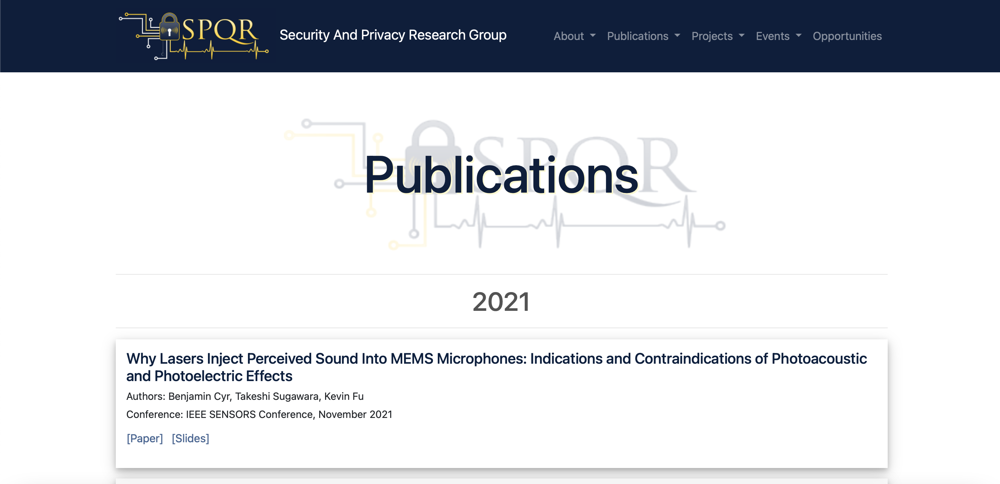

Other Projects
Throughout my previous jobs and classes, I have completed many projects that are based in UX, Graphic Design, and Web Development. This page showcases some of the projects I did in shorter periods of time with a variety of skills I have learned in the past few years.
Graphic Design
Alphabet Poster Design
I was challenged with creating an alphabet poster with a unique theme for this project. I chose to highlight country music artists, putting an emphasis on women in country music since they make up a large portion of the industry but are not recognized as often as men in the same industry. This assignment focused on layouts, grids, and the correct use of photoshop to create the character outlines. My process was to sketch out my original design ideas then make them come to life on the screen, making small adjustments along the way. *Note - not all of the artists are women or particularly country artists. This is due to the lack of women in the country music industry with certain letters to start their names.

Minimalistic Weather App Designs
With this assignment, I was challenged with creating designs for a weather application (containing six different screens) using a minimalistic design to represent the weather patterns. This assignment focused on compositional movement and balance, gestalt principles, and color palettes.
Typographic Collage
This project is focused on being able to use layers and masking in Adobe Photoshop. In my first steps, I had to sketch different words into photos of flowers in order to determine which approach I wanted to take with my design. After that, I chose white text to complement the flower and a brown background to make the colors stand out. I then used Photoshop to weave the letters in and out of the flower to create an overlapping effect. All of my design choices and sketches are outlined below.
Small Web Design Projects
SPQR Website Design
From July 2020 to December 2020, I was a Web Design and Marketing Intern for the SPQR Laboratory at the University of Michigan. My main job during this span of time was to add/change pages on the SPQR website based on what Kevin and Sara (the head researchers of the lab) requested. Below are some examples of pages that I created and altered on the site, as well as other activities I took part in during this internship!
EmSec Workshop Page
Blogs Page
Publications Page
Poster Page
Julia Lanier's Website Restructure
My number one priority when redesigning Julia's website was to ensure it was more accessible for anyone and everyone who wanted to access it, without compromising good design principles. In order to make sure as many accessibility measures as possible are taken, I run all sites I create through axe, wave, and w3 validators to check the visual elements as well as the backbone of the code to ensure everything is compatible with all screen sizes, devices, and external features (like screen readers). *Note: Julia has added to her site since I redesigned it, so some aspects might be different.
Accessibility Measures Added and Redesigned
- Alternative Text added to images
- Fixing color contrast errors with text and backgrounds
- Creating a proper HTML heirarchy to be read more efficiently by screen readers
- Adding a skip to content link
- Creating responsive design measures for different device widths
- Adding motion reducing options for animated elements